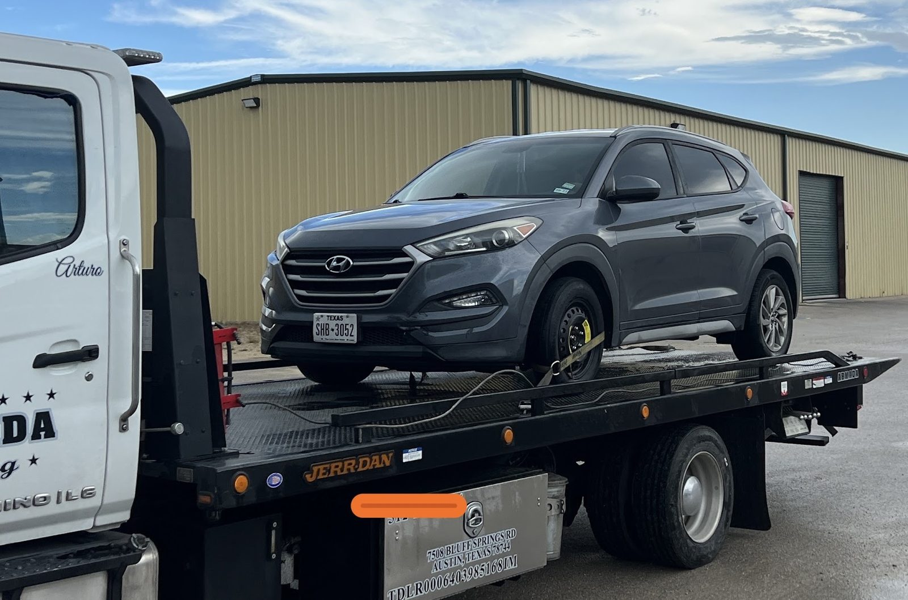

Bay 1
Flatbed towing
Your car goes on the flatbed and to the shop. Towed in one day, back the next when parts allow.
- Flatbed tow
- Tow to the shop
Towing and repair · Kyle, TX
Flatbed towing, roadside help, transmissions, alternators and batteries, with straight answers on what your car needs.

Towing and roadside help
Tow it in, fix it, or get you moving on the spot.
Your car goes on the flatbed and to the shop. Towed in one day, back the next when parts allow.
For a car that stops on the road. Quick arrival and fixes on the spot when possible.
Cars stuck off the road, in a ditch or an embankment, pulled out with care.
Rebuild, replace or source a quality used transmission, with the options explained before you choose.
Alternator and belt replacement, with other issues flagged so you know what can wait.
Battery replacement for the car that will not start.


Reviews
4.3259 Google reviewsOur car was at Mavericks Garage for about 2½ months, and while that may sound like a negative experience, it was actually the complete opposite. After the transmission went out on our Ford Fusion, they provided us with an estimate.
Joe had a pretty impossible task … get THIS car, out of this embankment, after midnight, with a flat winch truck and a jack. 5-6 ft. of room in front of the car, no way to pull the vehicle backwards, but no traction to drive it forward. Needless to say… everyone was impressed with the job he did, and he was an absolute savior in my situation.
Joe was an absolute lifesaver. After Tesla roadside went nowhere, I randomly called a dispatch service I found online and somehow ended up with Joe; he showed up within 30 minutes, was super professional and kind, and clearly knew exactly what he was doing. He had to remove the entire wheel and take it to get swapped, and still had everything fixed in under two hours (even after checking all of my other tires)!!
I would like to thank Mavericks in Buda for taking care of my car. I needed a new alternator, belt and battery and not only did they tow it from Chuck Nash to their location but they got it back to me in a day. They did a fantastic job and were extremely reasonably priced.
A tow truck and a repair bay under one name, in the tan metal building at Building 9.
Late-night recoveries, roadside calls and stranded families are all part of the job. We answer the phone and show up fast.
In the bay, we explain your options, including whether a repair makes sense for the car's value. Some jobs take time. We keep you updated.

Find us
721 Rohde Rd Bldg 9, Kyle, TX 78640
Look for the tan metal building with the Mavericks Garage sign. Call ahead for towing.